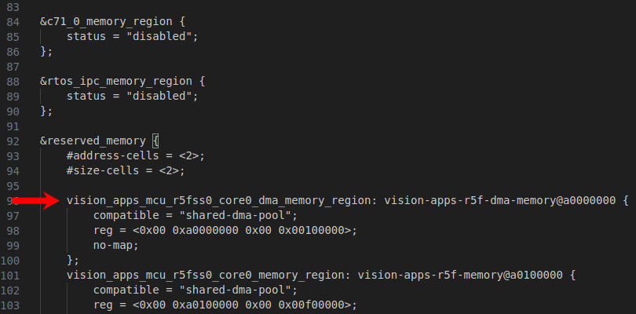

9.9. Understanding and updating SDK memory map for J721S2¶
9.9.1. Introduction¶
Jacinto 7 SOC’s have multiple CPUs all collaborating to realize a given application. For all the different CPUs to co-exist and exchange data between themselves, an integrator needs to partition the common DDR memory among the different CPUs and shared memory regions.
This developer note describes the memory partitions that are needed and their constraints. It also describes a Python based tool which can be used to automate the generation of certain files which are used to build the software for a given memory map
9.9.2. Terminology¶
The CPU names used on Linux side and RTOS side are slightly different as listed below,
CPU name in RTOS |
CPU name in Linux |
Applicable SoC’s |
|---|---|---|
mcu1_0 / mcu1_1 |
mcu_r5fss0_core0 / mcu_r5fss0_core1 |
J721E / J721S2 / J784S4 |
mcu2_0 / mcu2_1 |
main_r5fss0_core0 / main_r5fss0_core1 |
J721E / J721S2 / J784S4 |
mcu3_0 / mcu3_1 |
main_r5fss1_core0 / main_r5fss1_core1 |
J721E / J721S2 / J784S4 |
mcu4_0 / mcu4_1 |
main_r5fss2_core0 / main_r5fss2_core1 |
J784S4 |
mpu1 |
na |
J721E / J721S2 / J784S4 |
c6x_1 |
c66_0 |
J721E |
c6x_2 |
c66_1 |
J721E |
c7x_1 |
c71_0 |
J721E / J721S2 / J784S4 |
c7x_2 |
c71_1 |
J721S2 / J784S4 |
c7x_3 |
c71_2 |
J784S4 |
c7x_4 |
c71_3 |
J784S4 |
Note
In this document we will use RTOS names, unless stated explicitly.
9.9.3. Memory partitions and constraints¶
The table below shows the various partitions that are needed in a typical Jacinto 7 memory map. Depending on the end applications there can be more or less partitions.
Note
All partitions for the MCU’s listed below MUST be in the 32b address space i.e starting with 0x80000000. Otherwise, a RAT must be performed on region to map it into the 32b address space. Please note a few important considerations below when configuring your memory map.
Consideration 1:
The upper limit of the 32b memory region will depend on the u-boot memory reservation as described here https://software-dl.ti.com/jacinto7/esd/processor-sdk-linux-j721s2/09.00.01.02/exports/docs/linux/Foundational_Components/U-Boot/UG-General-Info.html#available-ram-for-image-download.
If the memory being used in the vision apps memory map conflicts with the u-boot memory, there will be an error thrown in the u-boot log.
Consideration 2:
If using SBL as the bootloader, please note that the SBL uses scratch memory at a specified address. Please refer to the document here LINK which describes this location (“SBL_SCRATCH_MEM_START”) and where it can be reconfigured.
Ideally, this memory would be located within the DMA Buf shared memory region in order to avoid errors when loading remote cores.
The 16MB alignment “constraints” are mainly due to in C6x, cache/non-cache granularity.
Partition |
Constraints |
Description |
Applicable SoC’s |
|---|---|---|---|
mcu1_0 <-> linux IPC shared region |
|
Used for IPC between this CPU and Linux |
J721E / J721S2 / J784S4 |
mcu1_0 code/data |
|
Used for holding code/data for this CPU |
J721E / J721S2 / J784S4 |
mcu1_1 <-> linux IPC shared region |
|
Used for IPC between this CPU and Linux |
J721E / J721S2 / J784S4 |
mcu1_1 code/data |
|
Used for holding code/data for this CPU |
J721E / J721S2 / J784S4 |
mcu2_0 <-> linux IPC shared region |
|
Used for IPC between this CPU and Linux |
J721E / J721S2 / J784S4 |
mcu2_0 code/data |
|
Used for holding code/data for this CPU |
J721E / J721S2 / J784S4 |
mcu2_1 <-> linux IPC shared region |
|
Used for IPC between this CPU and Linux |
J721E / J721S2 / J784S4 |
mcu2_1 code/data |
|
Used for holding code/data for this CPU |
J721E / J721S2 / J784S4 |
mcu3_0 <-> linux IPC shared region |
|
Used for IPC between this CPU and Linux |
J721E / J721S2 / J784S4 |
mcu3_0 code/data |
|
Used for holding code/data for this CPU |
J721E / J721S2 / J784S4 |
mcu3_1 <-> linux IPC shared region |
|
Used for IPC between this CPU and Linux |
J721E / J721S2 / J784S4 |
mcu3_1 code/data |
|
Used for holding code/data for this CPU |
J721E / J721S2 / J784S4 |
mcu4_0 <-> linux IPC shared region |
|
Used for IPC between this CPU and Linux |
J784S4 |
mcu4_0 code/data |
|
J784S4 |
|
mcu4_1 <-> linux IPC shared region |
|
Used for IPC between this CPU and Linux |
J784S4 |
mcu4_1 code/data |
|
J784S4 |
|
c6x_1 <-> linux IPC shared region |
|
Used for IPC between this CPU and Linux |
J721E |
c6x_1 code/data |
|
Used for holding code/data for this CPU |
J721E |
c6x_2 <-> linux IPC shared region |
|
Used for IPC between this CPU and Linux |
J721E |
c6x_2 code/data |
|
Used for holding code/data for this CPU |
J721E |
c7x_1 <-> linux IPC shared region |
|
Used for IPC between this CPU and Linux |
J721E / J721S2 / J784S4 |
c7x_1 code/data |
|
Used for holding code/data for this CPU |
J721E / J721S2 / J784S4 |
c7x_2 <-> linux IPC shared region |
|
Used for IPC between this CPU and Linux |
J721S2 / J784S4 |
c7x_2 code/data |
|
Used for holding code/data for this CPU |
J721S2 / J784S4 |
c7x_3 <-> linux IPC shared region |
|
Used for IPC between this CPU and Linux |
J784S4 |
c7x_3 code/data |
|
Used for holding code/data for this CPU |
J784S4 |
c7x_4 <-> linux IPC shared region |
|
Used for IPC between this CPU and Linux |
J784S4 |
c7x_4 code/data |
|
Used for holding code/data for this CPU |
J784S4 |
RTOS <-> RTOS IPC shared region |
|
Used for IPC between all the RTOS CPUs |
J721E / J721S2 / J784S4 |
The table below lists additional partitions required when using vision_apps and tiovx,
Partition |
Constraints |
Description |
|---|---|---|
vision apps remote log memory |
|
Used to redirect printf from all CPUs to Linux |
tiovx object descriptor memory |
|
Used to hold TI OpenVX object descriptors. Basically acts as meta data shared memory between all OpenVX CPUs |
DMA Buf shared memory |
|
Used to hold large pixel/IO buffers which are to be exchanged between different CPUs |
9.9.4. Applying the memory map¶
The memory map described in previous section needs to be applied in the software to take effect when the software is run. This memory map is applied at multiple places within the software. In this section we list the files in which the memory map is applied. In next section, we describe a tool such that memory map can be specified at one place and then the modifications to different files are generated by the tool.
File type |
Description |
Example files |
|---|---|---|
Linux dts, dtso file |
The various carve outs or memory partitions as seen by Linux are listed here |
|
Linker command file |
Defines the memory partitions as seen by a specific RTOS CPU |
|
MPU/MMU init files |
Sets up the different CPU specific MMU/MPU based on defined memory regions |
|
System init files |
System init functions where we need to pass memory partition information to different APIs, SW modules |
|
9.9.5. Using PyTI_PSDK_RTOS for generating memory map files¶
9.9.5.1. Installing PyTI_PSDK_RTOS¶
Make sure python3.x and pip3.x is installed
Do below to install PyTI_PSDK_RTOS using pip3
cd vision_apps/tools/PyTI_PSDK_RTOS pip3 install -e . --user
9.9.5.2. Using PyTI_PSDK_RTOS¶
An example python script to generate memory is located at below path
vision_apps/platform/<soc>/rtos/gen_linker_mem_map.py
To generate the memory map related files do below
cd vision_apps/platform/<soc>/rtos ./gen_linker_mem_map.py
Executing the script generates below files (paths below relative to vision_apps/platform/<soc>/rtos)
Linker command files for various RTOS CPUs
./c66x_1/linker_mem_map.cmd ./c66x_2/linker_mem_map.cmd ./c7x_1/linker_mem_map.cmd ./mcu2_0/linker_mem_map.cmd ./mcu2_1/linker_mem_map.cmd
Memory map .h file that is used by various system init, mmu/mpu init functions
./app_mem_map.h
Linux DTS file snippets to copy/paste into linux DTS/DTSO files
./k3-<soc>-rtos-memory-map.dts
A human readable html table showing the different memory map sections
./system_memory_map.html
9.9.5.3. Applying the generated memory map¶
The linker command files
The linker command files defines the different memory sections specific to a CPU
These names should be used in another .cmd file to place memory sections into the defined memory regions
Memory map .h file
This defines the various memory segments as C #define values for start address and size of the memory region
Include this file in various C files to pass these #define’s as init parameters to various APIs
Linux DTS file snippets
Follow these instructions to apply the changes:
Copy the contents of the generated k3-{SOC}-rtos-memory-map.dtsi file and replace the reserved_memory section of the k3-{SOC}-rtos-memory-map.dtsi file that is located here:
PSDK_LINUX_PATH/board-support/linux*/arch/arm64/boot/dts/ti

Rebuild the dtb and dtbo from the PSDK_LINUX_PATH directory with the following:
make linux-dtbs
Install the dtb and dtbo to the rootfs/boot folder on the SD card from the same directory with the following:
sudo make linux-dtbs_install; sync
Apply the changes for r5f MPU. This step MUST be done manually as of now.
The below sections MUST be made non-cache in R5F MPU config (<soc>_mpu_cfg.c)
APP_LOG_MEM_ADDR # remote printf shared region APP_FILEIO_MEM_ADDR # remote core file i/o region TIOVX_OBJ_DESC_MEM_ADDR # OpenVX IPC shared region IPC_VRING_MEM_ADDR # RTOS <-> RTOS IPC shared region DDR_MCUx_y_IPC_ADDR # R5F <-> Linux IPC shared region
Ensure that the section address matches the one generated in the linker.cmd
9.9.5.4. Allocating 64-bit DDR space to C7x DSP¶
C7x DSP can access 64-bit address space via MMU. We can move the C7x heap to this space and make room for other 32-bit cores like C66x and R5F in the 32-bit address space.
- In devices like J721S2 which has 4GB of DDR is split as below,
Lower 2GB org = 0x0000_8000_0000 to 0x0000_FFFF_FFFF (physical)
Upper 2GB org = 0x0008_8000_0000 to 0x0008_FFFF_FFFF (physical)
- Using C7x MMU we can map this upper 2GB space which is physically non-contiguous as a virtually contiguous address as below
Lower 2GB org = 0x0000_8000_0000 to 0x0000_FFFF_FFFF (virtual)
Upper 2GB org = 0x0001_0000_0000 to 0x0001_7FFF_FFFF (virtual)
The MMU will take care of address translations across the boundary. Please note that C7x MMU serves only for the CPU and not DRU. Users will have to be careful not to provide virtual address to DRU while initiating the transfer as DRU does not have access to C7x MMU in J721S2
The gen_linker_mem_map.py python script is updated to generate the C7x DSP linker cmd files and program the MMU accordingly but it does not provide the dtb section to be updated in Linux. User will have to manually add a section as shown below.
vision_apps_core_heaps_lo: vision-apps-core-heap-memory-lo@d8000000 {
compatible = "shared-dma-pool";
reg = <0x00 0xd8000000 0x00 0x24000000>;
no-map;
};
vision_apps_core_heaps_hi: vision-apps-core-heap-memory-hi@880000000 {
compatible = "shared-dma-pool";
reg = <0x08 0x80000000 0x00 0x40000000>;
no-map;
};
9.9.5.5. Constructing the memory map¶
This section shows how to make your own memory map taking the memory map of vision_apps as an example. See file
vision_apps/platform/<soc>/rtos/gen_linker_mem_map.py
Install PyTI_PSDK_RTOS as shown here, Installing PyTI_PSDK_RTOS
Create a file say gen_linker_mem_map.py. Recommend to have a folder structure as seen inside vision_apps/platform/<soc>/rtos/
Import the python package using
from ti_psdk_rtos_tools import *
Define and assign global variables for different memory section base addresses and size’s. Recommend to assign values for addresses and size’s using values relative to some base value. This allows to change one memory section and others get adjusted based on the change.
Example, below we create a section for mcu2_1 CPU relative to mcu2_0 and within mcu2_1 we create partition such that all fit within 64MB.
mcu2_1_ddr_ipc_addr = mcu2_0_ddr_addr + mcu2_0_ddr_size; mcu2_1_ddr_resource_table_addr = mcu2_1_ddr_ipc_addr + linux_ddr_ipc_size; mcu2_1_ddr_addr = mcu2_1_ddr_resource_table_addr + linux_ddr_resource_table_size; mcu2_1_ddr_size = 64*MB - (mcu2_1_ddr_addr-mcu2_1_ddr_ipc_addr);
Using these variables create objects of type MemSection.
MemSection can be given a name, a attribute string, memory region address, size and a descriptive comment.
mcu2_1_ddr_ipc = MemSection("DDR_MCU2_1_IPC", "RWIX", mcu2_1_ddr_ipc_addr, linux_ddr_ipc_size, "DDR for MCU2_1 for Linux IPC");
It can also be give a string name used in DTS file. Note, the names given for different CPUs these need to match as given in the example file, since the names are used within linux kernel
mcu2_1_ddr_ipc.setDtsName("main_r5fss0_core1_dma_memory_region", "r5f-dma-memory");
In DTS files, the internal memory regions within a CPU are not relavent and only total CPU memory region is needed. Use the concat() function to concat internal regions to make one large memory region, which is used for DTS file.
mcu2_1_ddr_resource_table = MemSection("DDR_MCU2_1_RESOURCE_TABLE", "RWIX", mcu2_1_ddr_resource_table_addr, linux_ddr_resource_table_size, "DDR for MCU2_1 for Linux resource table"); mcu2_1_ddr = MemSection("DDR_MCU2_1", "RWIX", mcu2_1_ddr_addr, mcu2_1_ddr_size, "DDR for MCU2_1 for code/data"); mcu2_1_ddr_total = MemSection("DDR_MCU2_1_DTS", "", 0, 0, "DDR for MCU2_1 for all sections, used for reserving memory in DTS file"); mcu2_1_ddr_total.concat(mcu2_1_ddr_resource_table); mcu2_1_ddr_total.concat(mcu2_1_ddr); mcu2_1_ddr_total.setDtsName("main_r5fss0_core1_memory_region", "r5f-memory");
In some cases like the ION heap used as shared memory, we dont want the “no-map” flag in DTS file. Use the function setNoMap() to indicate this
ddr_shared_mem = MemSection("DDR_SHARED_MEM" , "", ddr_shared_mem_addr , ddr_shared_mem_size , "Memory for shared memory buffers in DDR"); ddr_shared_mem.setDtsName("vision_apps_shared_region", "vision_apps_shared-memories"); ddr_shared_mem.setNoMap(False);
Once MemSection objects are created, now create MemoryMap objects and add the MemSection objects to it.
Create a MemoryMap object one per CPU, this is needed for the CPU specific linker command file
mcu2_1_mmap = MemoryMap("mcu2_0"); mcu2_1_mmap.addMemSection( r5f_tcma ); mcu2_1_mmap.addMemSection( r5f_tcmb0 ); mcu2_1_mmap.addMemSection( mcu2_1_ddr_ipc ); mcu2_1_mmap.addMemSection( mcu2_1_ddr_resource_table ); mcu2_1_mmap.addMemSection( mcu2_1_ddr ); mcu2_1_mmap.addMemSection( app_log_mem ); mcu2_1_mmap.addMemSection( app_fileio_mem ); mcu2_1_mmap.addMemSection( tiovx_obj_desc_mem ); mcu2_1_mmap.addMemSection( ipc_vring_mem ); mcu2_1_mmap.addMemSection( ddr_shared_mem );
Use the function checkOverlap() to make sure you are not overlapping memory section’s by mistake
mcu2_1_mmap.checkOverlap();
Create a MemoryMap object for the global memory map .h file
c_header_mmap = MemoryMap("Memory Map for C header file"); ... c_header_mmap.addMemSection( mcu2_0_ddr_ipc ); c_header_mmap.addMemSection( mcu2_1_ddr_ipc ); ... c_header_mmap.checkOverlap();
Create a MemoryMap object for DTS file
dts_mmap = MemoryMap("Memory Map for Linux kernel dts/dtsi file"); ... dts_mmap.addMemSection( mcu2_1_ddr_ipc ); dts_mmap.addMemSection( mcu2_1_ddr_total ); ... dts_mmap.checkOverlap();
Create a MemoryMap object for HTML table file
html_mmap = MemoryMap("System Memory Map for Linux+RTOS mode"); ... html_mmap.addMemSection( mcu2_1_ddr_ipc ); html_mmap.addMemSection( mcu2_1_ddr_resource_table ); ... html_mmap.checkOverlap();
Finally invoke the export() function to generate the various files using the created MemoryMap objects
LinkerCmdFile(mcu2_1_mmap, "./mcu2_1/linker_mem_map.cmd").export(); HtmlMmapTable(html_mmap, "./system_memory_map.html").export(); CHeaderFile(c_header_mmap, "./app_mem_map.h").export(); DtsFile(dts_mmap, "./k3-<soc>-vision_apps.dts").export();
Execute this python file to generate the files
./gen_linker_mem_map.py